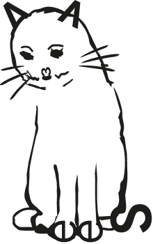
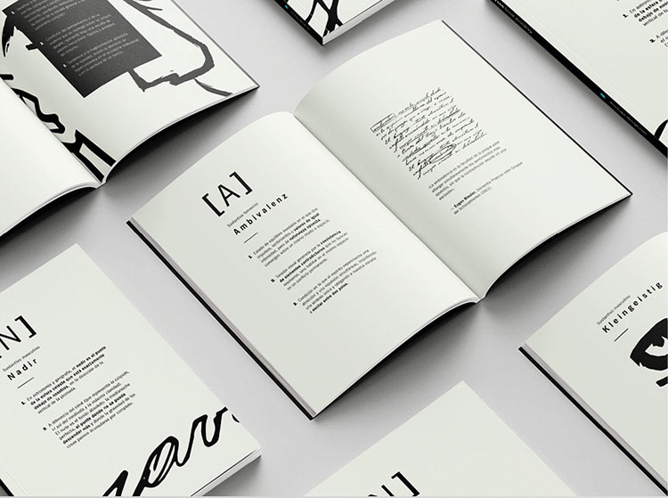
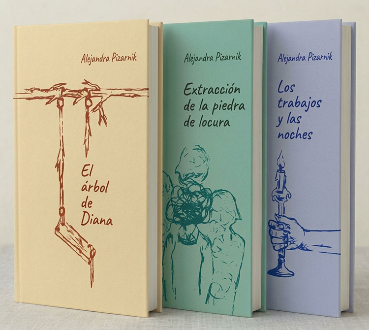

hola, soy melany, actualmente estudiante de diseño y comunicacion visual. y te cuento un poco sobre mi...
solo el gusto por «dibujar» Me gusta dibujar, como no sé de proporciones, ni de escalas, dibujo así

experiencia
pasacalles leo
Maquetación y prepaaración de archivos vectoriales para cartelería y pasacalles a gran escala. Creacion y digitalización y optimizacion de piezas gráficas vectoriales utilizando CorelDRAV y Adobe Illustrator
diseñadora gráfica freelance
Gestión integral y desarrollo de proyectos visuales de manera autónomo
habilidades tecnológicas
programas de diseño
- Corel Draw
- Adobe Photoshop CC
- Adobe InDesing
- Adobe After Effects
paquete office
- paquete office completo
estudios
universidad de lanús
Lic. en Diseño y comunicación visual. 2018 - actualmente
ada ittw
Diseño UX/UI. 2022-2023
Diccionario ilustrado
Registro de sensaciones
El objetivo principal fue reinterpretar el vínculo con el lector y poner a prueba los límites del objeto libro, usando el soporte físico como un recurso narrativo que potencia el significado de la obra. Al tratarse de un desarrollo de carácter experimental, no existe restricciones de formato, estructura ni materiales


Coleccion de libros
Libro de poemas, Pizarnik
El objetivo de este proyecto consiste en desarrollar la identidad visual y el maquetado de una colección de tres títulos. El trabajo comprende la pieza gráfica completa: diseño exterior y la grilla tipográfica del interior, garantizando coherencia formal y conceptual en toda la serie.